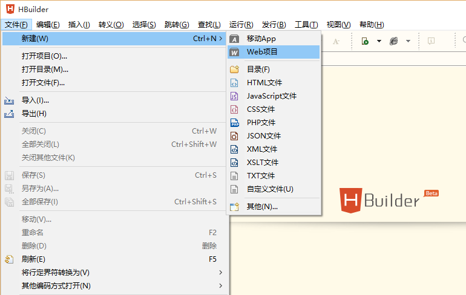
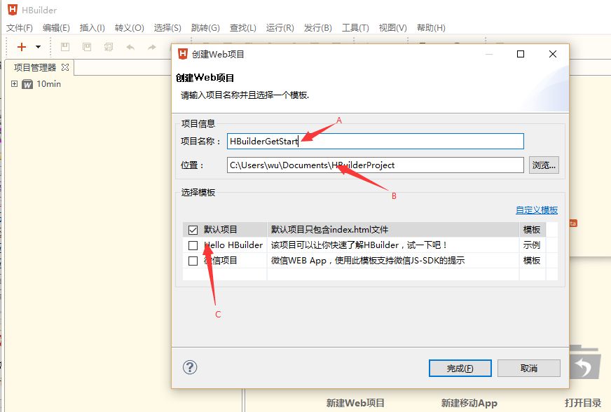
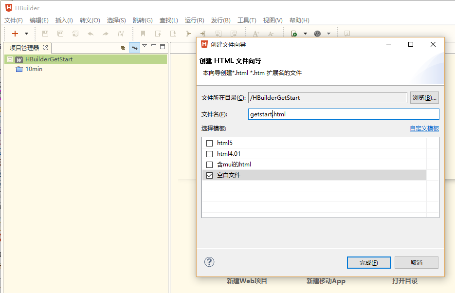
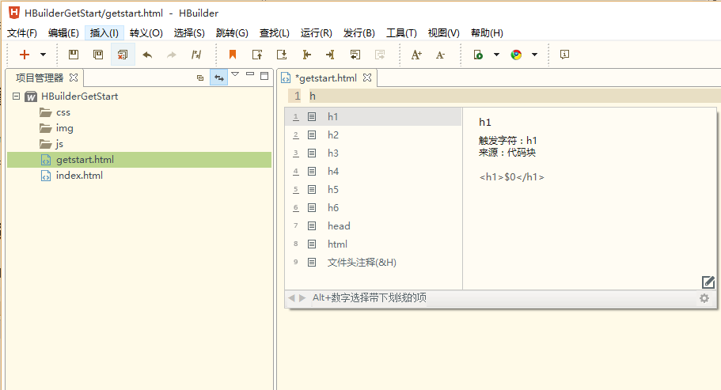
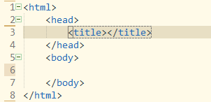
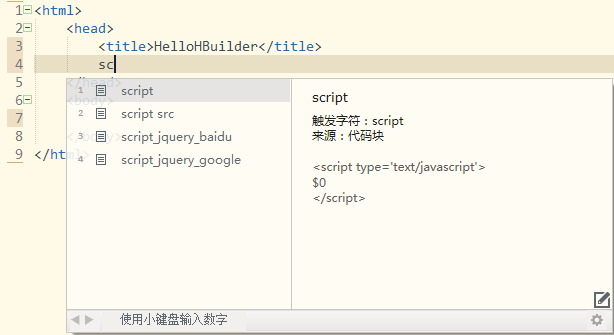
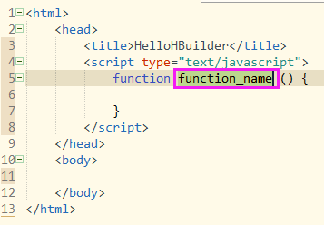
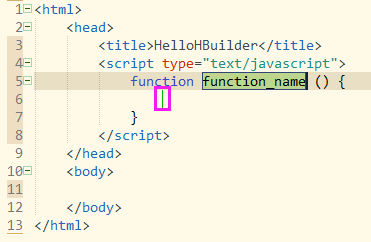
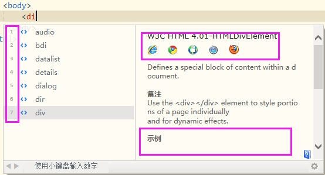

HBuilderとは？
HBuilder は、DCloud（数字天堂）がリリースした、HTML5 をサポートする Web 開発 IDE です。HBuilder の開発には Java、C、Web、Ruby が使われています。HBuilder 自体は主に Java で記述されており、Eclipse ベースのため、当然 Eclipse のプラグインと互換性があります。速さが HBuilder の最大の強みであり、完全な構文ヒントやコード入力方式、コードスニペットなどにより、HTML、JS、CSS の開発効率を大幅に向上させます。
HBuilder のインストール方法
HBuilder ダウンロード先：HBuilder公式サイトhttp://www.dcloud.io/「無料ダウンロード」をクリックして、最新版の HBuilder をダウンロードします。
HBuilder には現在 2 つのバージョンがあり、1 つは Windows 版、もう 1 つは Mac 版です。ダウンロードする際は、自分のコンピューターに合わせて適切なバージョンを選択してください。
HBuilder を使って新規プロジェクトを作成する
順に ファイル→新規作成→Webプロジェクトの選択 をクリックします（Ctrl+N、W を押すとクイック新規作成ができます（MacOS では Command+N を使用し、Webプロジェクトを左クリックします））


上の図のように、A の欄に新規プロジェクト名を入力し、B の欄にプロジェクトの保存パスを入力（または選択）します（このパスを変更すると HBuilder が記録し、次回から変更後のパスがデフォルトで使用されます）。C の欄では使用するテンプレートを選択できます（「カスタムテンプレート」をクリックし、開いたディレクトリ内の readme.txt を参照してカスタマイズできます）
HBuilder を使ってHTMLページを作成する
プロジェクトエクスプローラーで先ほど作成したプロジェクトを選択し、順に ファイル→新規作成→HTMLファイルの選択 をクリックします（Ctrl+N、W でクイック新規作成ができます（MacOS では Command+N を使用し、HTMLファイルを左クリックします））。そして「空のファイル」テンプレートを選択します。下図の通り。

HBuilder のライブプレビューを使ってプログラミングの効果を確認してみよう
Windows では Ctrl+P（MacOS では Command+P）を押すとライブプレビューモードに入ります。このモードでは、現在開いているファイルが HTML ファイルの場合、保存のたびに自動的にリフレッシュされ、現在のページの効果が表示されます（JS、CSS ファイルの場合も、現在ブラウザビューで開いているページと参照関係があればリフレッシュされます）。
HBuilder のコードスニペットは、重複コードの作業量を大幅に削減します
開いている getstart.html 内に「H」と入力します。下図の通り。

次に 8 を押すと、HTML の基本コードが自動生成されます。下図の通り。

コードスニペットとは？
コードスニペット（コードブロック）とは、よく使うコードの組み合わせです。例えば、JS で「$」と入力して Enter を押すと、「document.getElementById(id)」が自動入力されます。
コードスニペットの表示・編集は、「ツール」→「カスタムコードスニペット」で、該当するコードスニペットを選択して行えます。また、コードスニペットがアクティブになっているコードアシスタントで、詳細情報の右下にある編集アイコンをクリックして修正・表示することもできます。
コードスニペットの起動文字の原則1：連続する単語の頭文字です。例：「dg」で「document.getElementById("")」が、「vari」で「var i=0;」が、「dn」で「display: none;」がアクティブになります。
コードスニペットの起動文字の原則2：HTML のブロック全体では、通常タグ名を使用します。例えば script や style などです。通常、最大 4 文字入力するだけで目的のコードスニペットにマッチし、完全に入力する必要はありません。「sc」＋ Enter や「st」＋ Enter で script タグや style タグの入力を完了できます。
コードスニペットの起動文字の原則3：同じタグに複数のコードスニペットが存在する場合、最後に接尾辞を付けます。例えば、「meta」は <meta name="" content=""/> を出力しますが、「metau」は <meta charset="UTF-8"/> を出力します。「metag」も同様です。
コードスニペットの起動文字の原則4：元の構文が 4 文字を超える場合、よく使う構文では、最初の単語の起動文字を省略形にします。例えば、input button は「inbutton」と省略します。同様に「intext」は入力ボックスです。
コードスニペットの起動文字の原則5：JS のキーワードコードスニペットは、キーワードの最後に同じ文字を 1 つ追加します。例えば、「if」と直接入力すると if キーワードがヒント表示されますが、「iff」＋ Enter で if コードスニペットが表示されます。同様に「forr」「withh」などがあります。function は文字数が多いため、入力速度を上げるために「fun」という省略形を使います。例えば「funn」で function コードスニペットを出力し、「funa」と「func」はそれぞれ匿名関数とクロージャを出力します。
柔軟なショートカットキーにより、プログラミング中は手をキーボードから離さずに済みます
効果は下図の通りです。

HTML の基本テンプレートを新規作成すると、現在のカーソルは title タグ内にあります。ここで HTML の title を「hellohbuilder」に設定します。完了後、Ctrl+Enter を使用して現在の行の次の行に空行を挿入し、カーソルを次の行に移動します。
ここでは「sc」コードスニペットを使用して、JS コードを記述するための script ブロックを生成します（「sc」と入力して Enter）。下図の通り。

- 「funn」コードスニペットを使用して、JS メソッド「helloworld」を作成します（「funn」と入力して Enter）。下図の通り。

- このとき生成されたメソッドのメソッド名は選択状態になっています。新しいメソッド名「helloworld」を直接入力するだけで OK です。下図の通り。

上の図の緑色の縦線は、コードスニペット内で指定された次の編集位置です。Enter を押すと、カーソルはその縦線の位置に直接ジャンプします。
ここで下矢印、下矢印、Ctrl+Enter を押し、「style」と入力して Enter を押すと、CSS コード領域が生成されます。
CSS クラス classA を定義します：「. c l a s s A {」と入力して Enter、次に「f o n t」と入力して Enter、Enter、Enter。
次に Alt+下矢印、Alt+下矢印で次の編集領域にジャンプします。
順に「< d i v」と入力します（「<dv」＋ Enter や「<iv」＋ Enter でも構いません。構文アシスタントが曖昧マッチングで生成したいタグを判断します）。下図の通り。

上の図のように、コードアシスタントの左側には数字があります。これらの数字を使って対応する項目を選択できます。右側にはブラウザ互換性データとサンプルが表示されます。
「i」→ Enter →「d」→「1」→ 右矢印 → スペース →「c」→ Enter → Enter
div タグの class 属性「classA」の上にマウスを置き、Alt キーを押しながら左クリックすると、classA の定義箇所にジャンプできます。
Ctrl+Enter
div もコードスニペットで生成できます。例えば「divc」と入力して Enter、Enter、Enter と入力し、「helloworld」と入力します。下図の通り。
下矢印、Enter
CSSセレクター構文を使用してHTMLとCSSを素早く開発する（Emmet対応）
「div#page>div.logo+ul#navigation>li*2>a」と入力して Tab キーを押すと、コードが生成されます。下図の通り。

HBuilder には Emmet 機能が統合されており、CSS セレクター構文を使って HTML や CSS を素早く開発できます。Emmet についてもっと詳しく知りたい場合は、こちらをご覧ください。http://www.emmet.io/
強力なJS解析エンジンがJS開発のスピードを大幅に向上させます
JavaScript内でHTML、CSSをヒント表示
JavaScript内でHTMLのIDをヒント表示

JavaScript内でHTMLのタグ名をヒント表示

JavaScript内でCSSクラス名をヒント表示

JS は ID、タグ名、CSS クラス名によって HTML 要素を取得できるだけでなく、その要素タイプを正確に解析し、プロパティを正確にヒント表示できます。上の図のように、list
JavaScript内でJSONをヒント表示

JavaScript内でカスタムシステムメソッドをヒント表示

JavaScript内でオブジェクト参照とそのプロパティ、メソッドをヒント表示

JavaScript内でクロージャオブジェクトをヒント表示


class、id、JSメソッドの定義箇所にジャンプ
Alt キーを押しながら、参照されているメソッド名、ID、CSS クラス、ファイル（リンク、画像）を左クリックすると、参照元にジャンプできます。ファイルをまたいだ参照も可能です。
JSメソッド定義箇所にジャンプします。下図の通り。

CSSクラス定義箇所にジャンプします。下図の通り。

ID定義箇所にジャンプします。下図の通り。

ファイルにジャンプします。下図の通り。

もっと便利な機能を見つける
ジャンプアシスタント、選択アシスタント、エスケープアシスタント、ショートカットキーアシスタントにより、手をキーボードから離さずに操作できます。
HTML5+サポート、実機デバッグ、クラウドコンパイルにより、モバイルクロスプラットフォームのAPP開発が便利になります。
さらに多くの素晴らしい機能: リファクタリング | アウトライン | タスク | バージョン履歴 | 内蔵ウェブサーバー | ライブアップグレード | 安全なプロジェクト管理 | 囲む | マスク変換 | スマート訂正 | コード折りたたみ | 定義へ移動 | コード整形 | URLエンコード/デコード | 進数変換 | 自動クローズ。
まだ物足りない？プラグインをダウンロードしてさらに多くの機能を強化、上級者はプラグインを開発し、プラグインを共有してすべての開発者に貢献できます。
クリックしてノートを共有
ノートは本記事の内容の拡張である必要があります！
記事投稿は、こちらをクリック
登録招待コードの取得方法
ノートを共有する前にログインが必要です！
登録招待コードの取得方法